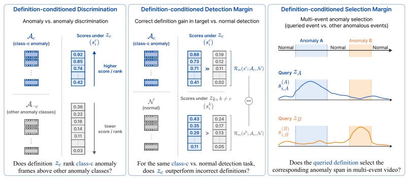
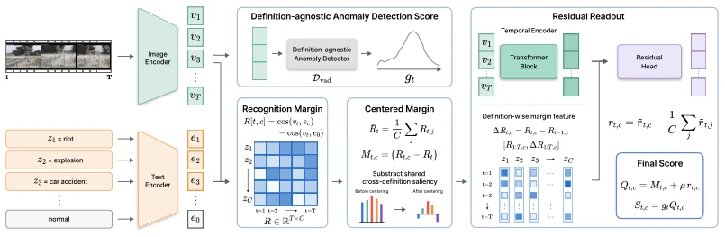
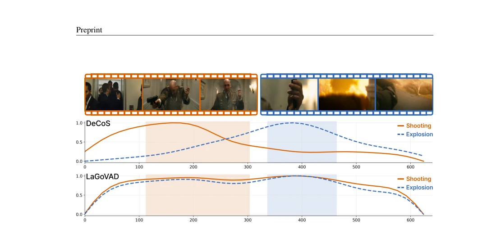

This paper pours cold water on the prosperity of Open-World VAD. The authors sharply point out that current models mostly fall into "Definition Blindness", meaning that regardless of what anomaly definition the user specifies, the time scoring curve output by the model remains almost unchanged. Existing metrics like Drift@5 are dominated by normal frames, unable to distinguish whether the model understands the instruction or simply detects general anomalies. The DeCoS method forces the model to distinguish evidence between definitions through contrastive learning. Although effective, it relies on CLIP features and multi-event evaluation still raises suspicions of synthetic stitching. Overall, this is a highly diagnostic work, reminding the community not to be deceived by high metrics, OWVAD should truly evaluate definition-conditioned responses, rather than simple anomaly localization.
研究动机Motivation
OWVAD 的核心假设是异常由定义决定，但现有工作如 LaGoVAD (Liu et al., 2025) 和 VadCLIP (Wu et al., 2024c) 虽引入语言，评测却主要看异常帧与正常帧分离。作者分析发现，Drift@5 指标中正常帧负样本权重过高，导致模型只需检测通用异常即可刷高分，无需响应特定定义。这种"定义盲视"导致模型在用户切换定义时，时间排序几乎不变。这违背了 OWVAD 的初衷，即根据用户意图动态调整评分。现有基准如 UCF-Crime (Sultani et al., 2018) 和 MSAD (Zhu et al., 2024) 未能隔离这种条件行为，使得强模型也能在定义跟随上表现极差。
The core assumption of OWVAD is that anomalies are determined by definitions, but existing works such as LaGoVAD (Liu et al., 2025) and VadCLIP (Wu et al., 2024c), although introducing language, primarily evaluate the separation between anomaly frames and normal frames. The authors' analysis reveals that the weight of normal frame negative samples in the Drift@5 metric is too high, causing the model to only need to detect general anomalies to score high, without needing to respond to specific definitions. This "Definition Blindness" causes the time ranking to remain almost unchanged when the user switches definitions. This violates the original intention of OWVAD, which is to dynamically adjust scores based on user intent. Existing benchmarks such as UCF-Crime (Sultani et al., 2018) and MSAD (Zhu et al., 2024) fail to isolate this conditional behavior, allowing strong models to perform extremely poorly on definition following.
The overall process is divided into diagnosis and improvement. The diagnosis proposes three new metrics: DC-Disc excludes normal frames, directly comparing anomaly classes; DC-Det∆ measures the gain brought by matching definitions; DC-Sel∆ tests selection capability in multi-event videos. In the improvement part, DeCoS is based on the output time support gt of a frozen anomaly detector, using CLIP to calculate the recognition margin Rt,c. The key innovations are Centering and Zero-sum constraints, i.e., Mt,c = Rt,c - 1/C * sum(Rt,j), ensuring evidence is distributed across different definitions rather than shared. Finally, through the residual head rt,c combined with temporal context, the final score St,c = gt * Qt,c. During training, definition selection loss is optimized, forcing the model to distinguish between matching definitions and distractors. The method is lightweight, adding only a small number of parameters, and does not require retraining the backbone. DeCoS converts anomaly support into definition contrast scores, retaining general anomaly detection capability while eliminating shared offsets across definitions, making scores truly reflect the match degree of user definitions.

Figure 2: Three evaluation metrics of definition following. DC-Disc removes normal negatives and compares one anomaly class with other anomaly classes. DC-Det∆measures the gain from the matching definition over non-matching definitions on the same target-versus-normal comparison. DC-Sel∆fixes a multi-event visual input and asks the query to select the matching anomalous span among co-occurring anomalies.

Figure 3: DeCoS converts anomaly support into definition-contrastive scores. A frozen definition- agnostic detector estimates temporal support gt. The readout produces a zero-sum contrast Qt,c across the definitions in Q. Their product preserves anomaly support while preventing a definition- shared score offset.
Tested on UCF-Crime, XD-Violence, MSAD. Baselines include LaGoVAD, VadCLIP, PLOVAD, and VLMs (InternVL3, Qwen). Results show that LaGoVAD performs passably under traditional metrics, but is near zero on metrics like DC-Det∆. DeCoS shows significant improvement on DC-Disc (e.g., 87.1 vs 41.0 on XD), proving it truly responds to definitions. Ablation studies show that the residual head and zero-sum constraint are crucial. Natural multi-event video tests also verify the effect, excluding stitching artifacts. Additionally, DeCoS has the fastest running speed, only 34ms, suitable for real-time applications.

Figure 1: Definition blindness in language-guided open-world VAD. The video contains two anoma- lous events, shooting and explosion. LaGoVAD localizes anomalous intervals, but its score curves remain nearly unchanged across different target definitions. DeCoS instead shifts the score mass toward the event matching the supplied definition and suppresses the non-target anomaly.